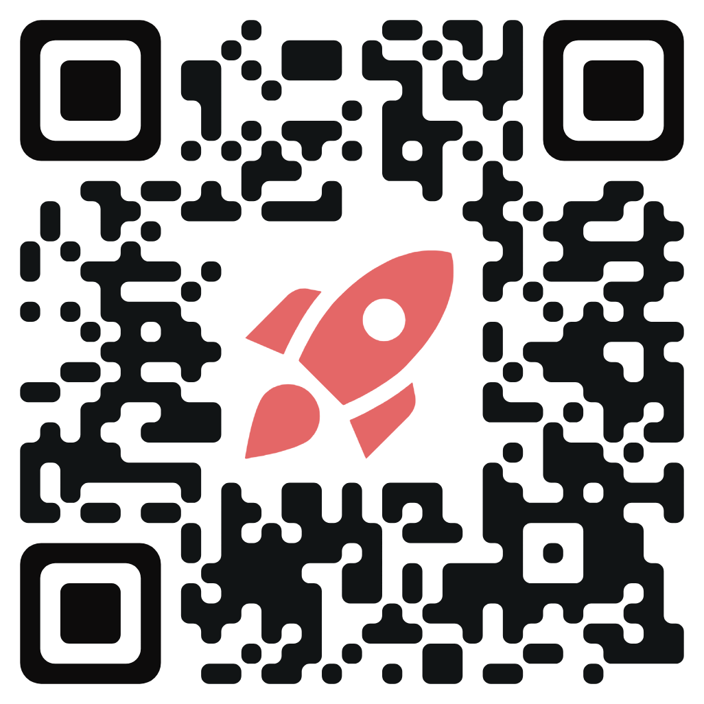

O que é este projeto?
Este é um projeto Interdisciplinar que envolveu diversas matérias, tendo como principal objetivo a confecção de um bolo.
Tema:
Primavera.
Justificativa:
A escolha do tema "Primavera" para o nosso bolo na competição é uma celebração da estação mais encantadora do ano. A estética da primavera é marcada por cores vibrantes, flores desabrochando e uma sensação de renovação. Incorporando esses elementos, nosso bolo será uma obra de arte visualmente impressionante, com tons pastéis, flores e detalhes que capturam a delicadeza e a beleza da estação.
Integrantes:
- Gabriel Ribeiro de Oliveira @_.gbiel._
- Ithalo Cavalcante Gomes
- Lívia Pereira Andreata @livia_andreata
- Nicoly Júlia de Oliveira
- Renan Pereira Andreata @renan_andreata2
Acesse o Qr Code para mais informações:
